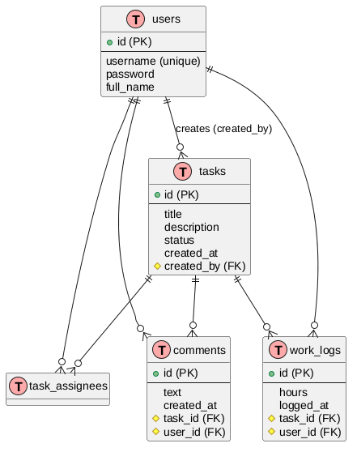

Esercitazione per Ergon Research
Table of Contents
Schema del progetto
activity-tracker/
├── pom.xml
├── src/main/java/com/example/activitytracker/
│ ├── ActivityTrackerApplication.java
│ ├── config/
│ │ ├── SecurityConfig.java
| | └── DataLoader.java
│ ├── entity/
│ │ ├── User.java
│ │ ├── Task.java
│ │ ├── TaskAssignee.java
│ │ ├── WorkLog.java
│ │ ├── Comment.java
│ │ └── TaskStatus.java (enum: BACKLOG, IN_PROGRESS, COMPLETED; con colore associato)
│ ├── repository/
│ │ ├── UserRepository.java
│ │ ├── TaskRepository.java
│ │ ├── WorkLogRepository.java
│ │ └── CommentRepository.java
│ ├── service/
│ │ └── TaskService.java
│ ├── controller/
│ │ └── TaskController.java
│ └── dto/
│ ├── TaskSummaryDto.java
│ ├── TaskDetailDto.java
│ ├── CommentDto.java
│ ├── CreateTaskRequest.java
│ ├── ChangeStatusRequest.java
│ ├── AddAssigneeRequest.java
│ ├── LogWorkRequest.java
│ └── AddCommentRequest.java
└── src/main/resources/
├── application.properties
└── data.sql (dati di test)
I test per le API RESTful si possono trovare nella cartella tests/, c'è uno script python e una collezione postman che fanno praticamente la stessa cosa.
1. config/
1.1. SecurityConfig
Responsabilità: gestire la sicurezza dell’applicazione (autenticazione e autorizzazione).
Cosa fa:
- Disabilita CSRF – non necessario per API REST stateless.
- Sessioni stateless – nessuna sessione lato server; ogni richiesta deve portare le credenziali (HTTP Basic). Questo soddisfa il requisito “chiudi il browser e riapri, devi rifare login”.
- Autorizzazione:
- Consente l’accesso libero alla console H2 (/h2-console/**) senza autenticazione.
- Richiede autenticazione per tutte le altre richieste (le API).
- Autenticazione HTTP Basic – le credenziali (username e password) vengono inviate nell’header
Authorization. - Header frame
SAMEORIGIN– necessario per visualizzare la console H2 nei frame. - Definisce un
PasswordEncodercon algoritmo BCrypt. - Definisce un
UserDetailsServiceche cerca gli utenti nel database usandoUserRepository.
Riassunto: La console H2 è pubblica, le API sono protette da login obbligatorio a ogni richiesta (nessuna sessione), le password sono codificate con BCrypt e gli utenti vengono caricati da DB.
1.2. DataLoader
Responsabilità: inserire dati di test nel database all’avvio dell’applicazione, solo se il database è vuoto.
Cosa fa:
- Controlla se l’utente mario esiste già; se sì, non fa nulla (evita duplicati).
- Crea due utenti (mario e anna) con password codificate da BCrypt.
- Crea tre task in diversi stati, assegnandoli ai rispettivi creatori (e anche ad altri).
- Utilizza un salvataggio in due passi per gestire correttamente la tabella associativa
task_assignees.
- Utilizza un salvataggio in due passi per gestire correttamente la tabella associativa
- Inserisce alcune ore lavorate (
work_logs) e commenti di esempio. - Stampa messaggi di log sulla console per confermare l’avvenuto inserimento.
Riassunto: Popola il database H2 con dati predefiniti in modo automatico e sicuro, rendendo l’applicazione immediatamente testabile senza bisogno di script SQL esterni.
In breve:
SecurityConfig= imposta le regole di accesso (chi può vedere cosa).DataLoader= prepara i dati iniziali per provare l’app.
2. entity/ Schema Entità-Relazione\
Il diagramma rappresenta la struttura del database.

2.1. Dettaglio Entità
2.1.1. users
- id : Long, chiave primaria auto‑generata.
- username : String, univoco, obbligatorio.
- password : String, in chiaro solo per prototipo (in produzione va codificata).
- fullName : String, nome esteso dell'utente.
2.1.2. tasks
- id : Long, PK.
- title : String, titolo dell'attività.
- description : String, descrizione dettagliata.
- status : Enum (BACKLOG, INPROGRESS, COMPLETED), colore gestito lato frontend.
- createdAt : LocalDateTime, data di creazione.
- createdBy : FK verso users (autore dell'attività).
2.1.3. task_assignees
- Tabella di join per la relazione molti‑a‑molti tra tasks e users.
task_id: FK verso tasks, parte della PK composita.user_id: FK verso users, parte della PK composita.
2.1.4. work_logs
- id : Long, PK.
- hours : Double, ore lavorate in questa registrazione.
- loggedAt : LocalDateTime, momento della registrazione.
task_id: FK verso tasks.user_id: FK verso users (chi ha lavorato).
2.1.5. comments
- id : Long, PK.
- text : String (max 1000), contenuto del commento.
- createdAt : LocalDateTime.
task_id: FK verso tasks.user_id: FK verso users (autore del commento).
2.2. Note di Implementazione
- I commenti sono ordinati per `createdAt DESC` per rispettare la specifica (dal più recente al più vecchio).
- Il totale ore su un task si calcola come
`SUM(work_logs.hours)`di tutte le righe associate. Le transizioni di stato consentite sono:
BACKLOG→IN_PROGRESSIN_PROGRESS→COMPLETEDCOMPLETED→IN_PROGRESS
Ogni altra transizione viene respinta con errore 400.
- Spring Data JPA gestirà le relazioni attraverso le annotazioni `@ManyToOne`, `@ManyToMany` e `@OneToMany`.
2.3. Regole API (riepilogo)
- GET /api/tasks/my?status=… → task dell'utente corrente per stato.
- GET /api/tasks/{id} → dettaglio (con commenti, ore totali, assegnatari).
- POST /api/tasks → crea task in BACKLOG (assegnato al creatore).
- PUT /api/tasks/{id}/status → cambia stato.
- POST /api/tasks/{id}/assignees → aggiunge un utente all'attività.
- POST /api/tasks/{id}/worklogs → registra ore lavorate.
- POST /api/tasks/{id}/comments → aggiunge un commento.
3. repository/ JPA
Le interfacce nel package repository estendono JpaRepository, che fornisce automaticamente i metodi CRUD di base (salva, trova per ID, elimina, ecc.).
In più, ogni repository dichiara metodi personalizzati per soddisfare i requisiti dell’applicazione.
UserRepository
- Metodo standard:
findByUsername(String username) - Cosa fa: restituisce un utente cercandolo esattamente per il campo
username(univoco). - Utilizzo: durante l’autenticazione (
UserDetailsService) e nel controller per ottenere l’utente corrente dalle API.
WorkLogRepository
getTotalHoursByTask(taskId)→ calcola la somma delle ore registrate su un task (da qualsiasi utente).- Particolarità: usa
COALESCE(SUM(...), 0)per restituire 0 se non ci sono ore, evitando valori nulli. - Utilizzo: per mostrare il totale ore nel dettaglio del task.
CommentRepository
findByTaskIdOrderByCreatedAtDesc(taskId)→ restituisce tutti i commenti di un task ordinati dal più recente al più vecchio.- Utilizzo: per visualizzare i commenti nell’ordine richiesto (requisito funzionale).
In sintesi: queste interfacce traducono le esigenze applicative (filtri per stato, totali ore, ordinamento commenti) in query sul database, sfruttando la potenza di Spring Data JPA senza scrivere codice boilerplate
TaskRepository
findByAssigneeAndStatus(userId, status)→ recupera i task assegnati a un certo utente e con un determinato stato (es.BACKLOG,IN_PROGRESS,COMPLETED).findByAssignee(userId)→ recupera tutti i task assegnati a un utente, indipendentemente dallo stato.- Come: query JPQL che fanno JOIN con la tabella
task_assigneesper filtrare per assegnatario.
4. service/ - Logica dell'applicazione
Il TaskService è il cuore dell’applicazione: contiene tutte le operazioni relative ai task, coordina i repository JPA e applica le regole funzionali richieste.
🔧 Operazioni di scrittura (modifica dati)
createTask– Crea un nuovo task in statoBACKLOG, lo salva e lo assegna automaticamente al creatore.changeStatus– Cambia lo stato di un task rispettando le transizioni consentite:BACKLOG→IN_PROGRESSIN_PROGRESS→COMPLETEDCOMPLETED→IN_PROGRESS- Mai verso
BACKLOG.
Lancia eccezioni (
IllegalStateException) per transizioni non valide.assignUserToTask– Assegna un utente a un task (due versioni: con ID e con oggetti). Evita assegnazioni duplicate.logWork– Registra le ore lavorate da un utente su un task (salva unWorkLog).addComment– Aggiunge un commento a un task e lo restituisce.
📖 Operazioni di lettura (solo query)
getTasksForUserByStatus– Restituisce i task assegnati a un utente, eventualmente filtrati per stato.getTaskDetail– Restituisce il dettaglio completo di un task: ore totali (daWorkLogRepository), commenti ordinati dal più recente, elenco assegnatari.
🧩 Mapping verso DTO
toSummary– Converte un’entitàTaskinTaskSummaryDto(id, titolo, stato, colore, totale ore, nomi assegnatari).toDetail– Estende il riepilogo con descrizione, creatore e lista diCommentDto.
⚙️ Caratteristiche tecniche
- Classe annotata con
@Servicee@Transactional: tutte le operazioni di scrittura sono transazionali; le letture sono esplicitamentereadOnly = true. - Iniezione delle dipendenze via costruttore (tutti i repository necessari).
Delega la persistenza ai repository JPA, concentrandosi sulla logica applicativa.
In sintesi: il TaskService implementa tutti i requisiti funzionali del progetto (creazione, cambio stato, assegnazione, ore, commenti, visualizzazioni filtrate) mantenendo le regole di business e isolando il controller dai dettagli di persistenza.Il TaskService è il cuore dell’applicazione: contiene tutte le operazioni relative ai task, coordina i repository JPA e applica le regole funzionali richieste.
5. controller/
TaskController
Responsabilità: esporre i servizi RESTful per la gestione dei task, facendo da tramite tra le richieste HTTP e la logica di business ( TaskService ).
Endpoint e funzioni
| Metodo | URL | Funzione |
| GET | /api/tasks |
Lista task dell'utente autenticato, eventualmente filtrati per stato (BACKLOG, INPROGRESS, COMPLETED) |
| GET | /api/tasks/{id} |
Dettaglio completo di un task (commenti, ore totali, assegnatari) |
| POST | /api/tasks |
Crea un nuovo task (automaticamente in BACKLOG e assegnato al creatore). Restituisce 201 Created |
| PUT | /api/tasks/{id}/status |
Cambia lo stato di un task (validato dal service) |
| POST | /api/tasks/{id}/assignees |
Assegna un altro utente al task |
| POST | /api/tasks/{id}/worklogs |
Registra ore lavorate dall'utente autenticato |
| POST | /api/tasks/{id}/comments |
Aggiunge un commento (visualizzati dal più recente) |
Metodo di supporto
getCurrentUser: estrae l'utente dal contesto di sicurezza (Authentication), recuperandolo dal database tramite username. Lancia eccezione se non trovato.
Caratteristiche
- Iniezione delle dipendenze via costruttore.
- Tutte le operazioni di modifica richiedono autenticazione.
- Il controller è "leggero": tutta la logica di business è delegata al TaskService.
- Le risposte usano i DTO (TaskSummaryDto, TaskDetailDto) per separare il modello interno dalla rappresentazione esterna.
In sintesi: il controller è il punto di ingresso per tutte le operazioni richieste dai requisiti funzionali, garantendo che solo utenti autenticati possano operare e che i dati restituiti siano sempre filtrati e strutturati.
6. dto/
6.1. AddAssigneeRequest
- Tipo: DTO di richiesta (input).
- Campi: userId (Long).
- Scopo: Viene utilizzato quando il client invia una richiesta per aggiungere un assegnatario a un task.
Esempio di JSON inviato dal frontend:
{ "userId": 2 }
- Utilizzo nel controller:
POST /api/tasks/{id}/assignees– il corpo viene deserializzato in un oggettoAddAssigneeRequest.
6.2. AddCommentRequest
- Tipo: DTO di richiesta.
- Campi: text (String).
- Scopo: Contiene il testo di un nuovo commento da aggiungere a un task. Esempio di JSON:
{ "text": "Aggiornamento importante" }
- Utilizzo:
POST /api/tasks/{id}/comments.
6.3. ChangeStatusRequest
- Tipo: DTO di richiesta.
- Campi:
status(tipoTaskStatus, un enum con valoriBACKLOG,IN_PROGRESS, COMPLETED). - Scopo: Specifica il nuovo stato a cui portare un task. Spring converte automaticamente la stringa JSON nell'enum corrispondente. Esempio:
{ "status": "IN_PROGRESS" }
- Utilizzo:
PUT /api/tasks/{id}/status.
6.4. CommentDto
- Tipo: DTO di risposta (output).
- Campi:
id,text,authorUsername,createdAt(LocalDateTime). - Scopo: Rappresenta un commento da restituire al client. Viene costruito nel
TaskServicea partire dall'entitàComment. Mostra il nome utente dell'autore (non l'ID) e la data di creazione. - Utilizzo: Incluso nella lista di commenti di
TaskDetailDto.
6.5. CreateTaskRequest
- Tipo: DTO di richiesta.
- Campi:
title,description(entrambi String). - Scopo: Trasporta i dati necessari per creare un nuovo task. Il creatore e lo stato (BACKLOG) vengono impostati automaticamente dal backend.
- Utilizzo:
POST /api/tasks.
6.6. LogWorkRequest
- Tipo: DTO di richiesta.
- Campi:
hours(Double). - Scopo: Contiene il numero di ore da registrare su un task.
- Utilizzo:
POST /api/tasks/{id}/worklogs.
6.7. TaskDetailDto
- Tipo: DTO di risposta (output).
- Estende:
TaskSummaryDto. - Campi aggiuntivi:
description,createdByUsername,comments(lista diCommentDto). - Scopo: Fornisce tutti i dettagli di un singolo task, compresi i commenti e il nome del creatore.
- Costruzione: Nel service, dopo aver recuperato l'entità
Task, il totale ore e i commenti ordinati, viene creato unTaskDetailDtopassando tutti i valori al costruttore. - Utilizzo:
GET /api/tasks/{id}.
6.8. TaskSummaryDto
- Tipo: DTO di risposta (output).
- Campi:
id,title,status,statusColor,totalHours,assigneeNames(lista di stringhe). - Scopo: Rappresenta un riepilogo leggero di un task, usato per popolare elenchi (ad esempio la lista dei task filtrati per stato). Include già il colore dello stato (per eventuale UI) e la somma delle ore lavorate.
- Utilizzo:
GET /api/taskse come base perTaskDetailDto.
Perché usare i DTO?
- Disaccoppiamento: Le entità JPA non vengono mai esposte direttamente; eventuali modifiche al modello interno non rompono le API.
- Sicurezza: Si possono omettere campi sensibili (es. password).
- Personalizzazione: I dati vengono formattati in modo adatto al frontend (es. colore dello stato, nome utente invece di ID).
- Validazione implicita: I DTO di richiesta definiscono esattamente cosa il client deve inviare.